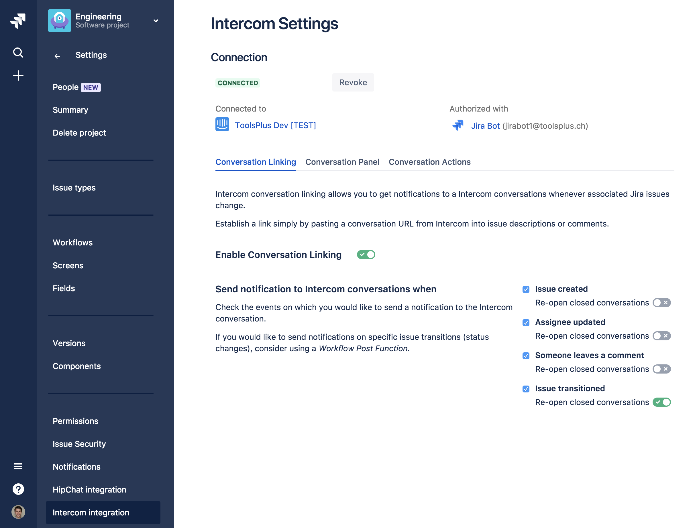

Getting Started
Installation
- Log into your Jira instance as an admin.
- Click the admin dropdown and choose Add-ons. The Find new add-ons screen loads.
- Locate Intercom for Jira.
- Click Free trial to download and install your add-on.
You're all set!
Proceed with the setup of your Intercom connection.
Setup a Connection to Intercom
Before you can see any Intercom data you will have to set up a connection to your Intercom app.
Click the admin dropdown and choose Projects.
Click the project for which you would like to set up an Intercom connection.
In the left sidebar, click on Intercom integration.
Then click the button Connect with Intercom.
This will redirect you to the Intercom OAuth page, where you will be asked to log into Intercom (if you haven't done so already) and then for permission to link Jira to Intercom.
[info] Note
The Intercom user you use to authenticate the connection will be shared by all Jira users of this project. Every interactions with Intercom happens on behalf of this particular Intercom user.
If you do not want to use your personal Intercom account, consider setting up a Intercom user specifically for this add-on.
See Intercom Documentation on how to add a new teammate.
On the top right of the OAuth page select the Intercom app you would like to connect to.
Click Connect to continue. The OAuth page closes automatically and the Intercom connection status changes to Connected.

When connected the connection details show which Intercom app you are connected to and which user has been used to authorize the connection. Clicking on the app or user name brings you straight to the respective Intercom page.